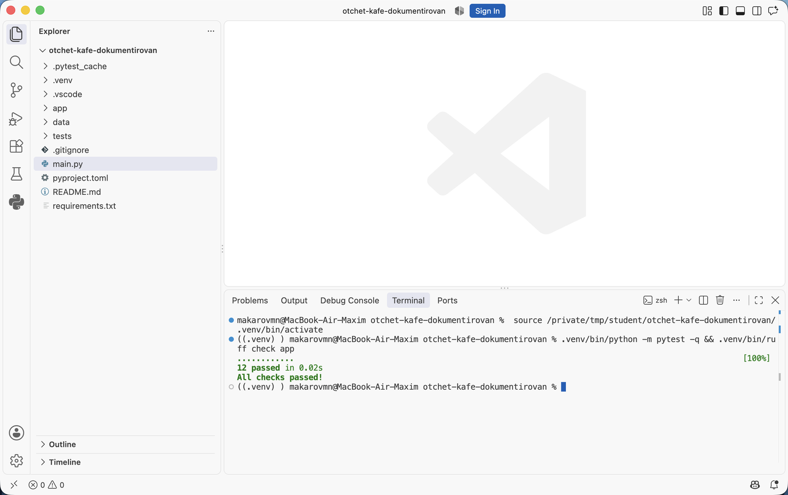
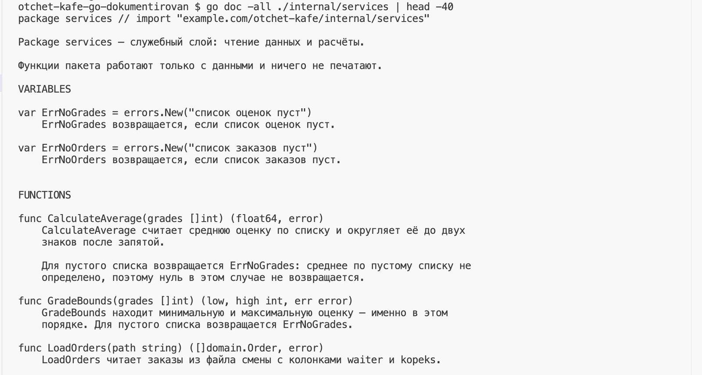
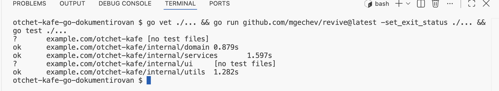

Аннотации типов и документация кода · МДК.01.01 · разработка программных модулей
Глава 4.11
Практика
и домашнее задание
В этой главе две работы. На паре документируется проект после практики по аннотациям: тела функций в нём писал не студент, и поэтому сразу видно, каких сведений в коде не хватает. Домашняя работа — своя папка lesson_04 в личном репозитории дисциплины: докстринги во всём пакете, включённая проверка и собранная справка. В конце — критерии оценки и порядок сдачи.
- Категория
- Практика
- Время на паре
- Около 60 минут
- Формат
- Google, проверка Ruff
- Результат
- Задокументированный пакет и пройденная проверка
§1Работа на паре: чужой модуль
Берётся проект «Отчёт кафе» в том виде, каким он стал после практики в главе 4.5: аннотации расставлены, описаний нет ни одного. Если практика сделана, работа продолжается в своей папке; если нет — во втором архиве. Задача: задокументировать пакет app/ целиком и довести проверку Ruff до чистого вывода.
Тела функций в проекте писал не студент, и для этой работы это полезно. В своём коде описание пишется по памяти, и пропущенное условие заметно не сразу. В чужом коде приходится открывать тело функции, чтобы выяснить единицы измерения суммы, поведение на пустом списке и порядок значений в возвращаемой паре. Эти сведения и переносят в докстринг.
| Что нужно на паре | Откуда взять |
|---|---|
| Проект | Своя папка после главы 4.5 или второй архив — кнопка выше |
Окружение .venv с Ruff и mypy | pip install -r requirements.txt — оба перечислены в списке зависимостей |
| Расширение-генератор | njpwerner.autodocstring, глава 4.10 |
| Образцы описаний | Двенадцать случаев из главы 4.9 |
§2Порядок выполнения
Дальше команды записаны коротко: ruff check app, python -c "…", python -m pytest -q. В таком виде они работают в терминале с активированным окружением — в начале строки стоит (.venv). Активация: source .venv/bin/activate.venv\Scripts\Activate.ps1 в PowerShell или .venv\Scripts\activate.bat в командной строке. Без активации перед командой пишут путь: .venv/bin/ruff check app.venv\Scripts\ruff check app.
Подготовьте проект
Откройте в VS Code свою папку после главы 4.5 или распакованный второй архив.
Создайте окружение и установите зависимости: python3 -m venv .venvpy -m venv .venv, затем .venv/bin/pip install -r requirements.txt.venv\Scripts\pip install -r requirements.txt. Ruff, mypy и pytest перечислены в requirements.txt.
Запустите проект: .venv/bin/python main.py.venv\Scripts\python main.py. Отчёт должен напечататься — дальше это поведение менять нельзя.
Запустите тесты и проверку типов: .venv/bin/python -m pytest -q.venv\Scripts\python -m pytest -q — проходят двенадцать, .venv/bin/mypy app.venv\Scripts\mypy app — Success. Так подтверждается, что работа начинается с того места, где закончилась первая часть темы.
Снимите исходный перечень замечаний
Откройте .vscode/settings.json: формат докстрингов google в нём уже задан, как в главе 4.10. Если параметра нет, добавьте его.
Проверьте, что в pyproject.toml включены набор "D" и конвенция google. Запустите .venv/bin/ruff check app --output-format=concise.venv\Scripts\ruff check app --output-format=concise и сохраните вывод: это перечень мест, которые предстоит закрыть. В стартовом архиве их 33.

D100, D103, D104 по файлам и итог Found 33 errors.Документируйте по пакетам, от листьев к корню
Порядок тот же, что в практике 4.5: utils, domain, services, ui. Последним пишется докстринг пакета в app/__init__.py с перечнем вложенных пакетов и точкой входа. Когда очередь доходит до функции, которая вызывает другую, описание вызываемой уже написано, и подсказка редактора его показывает.
В каждом файле сначала докстринг модуля — первой строкой: за что модуль отвечает и чего в нём нет. Затем публичные функции и классы: для каждой найдите близкий случай из главы 4.9 и держите его рядом. Заготовку вставляет генератор из главы 4.10, §3.
Каждый готовый файл проверяйте отдельно, как в главе 4.10, §9: ruff check app/utils/formatter.py. После каждого пакета запускайте проверку всего app и сверяйте число замечаний:
Итог ruff check app после каждого пакета
Числа получены на втором архиве при работе в этом порядке. Если после пакета замечаний осталось больше, чем здесь, в пакете есть пропущенное описание или неверно оформленный докстринг — его строка стоит в выводе выше итога.
Пройдите по исключениям и побочным действиям
Отдельно пройдите по функциям, которые возбуждают исключения, пишут файлы или меняют переданный объект: добавьте разделы Raises: и Note:. В проекте это такие функции:
| Что делает | Функции | Что описать |
|---|---|---|
возбуждает ValueError | calculate_average, grade_bounds, revenue_by_waiter, проверка в Order.__post_init__ | раздел Raises: с условием ошибки |
| работает с файлом | read_rows, load_orders, save_report | кодировка, перезапись, ошибка при отсутствии файла или папки |
| меняет переданный список | sort_orders_in_place | раздел Note:: список меняется на месте |
Ruff этого не проверит: он отмечает только отсутствие докстринга и нарушения оформления.
Прочитайте справку подряд
Выполните python -c "import app.services.orders as m; help(m)" и прочитайте получившуюся справку подряд. Места, где описание непонятно без кода, перепишите.

app.services.orders из эталонного архива: NAME — первая строка докстринга модуля, DESCRIPTION — остальной его текст, FUNCTIONS — функции с подписями и описаниями. Выход из постраничного просмотра — клавиша q.Вывод help() — та же документация без вёрстки. Если по ней вызвать функцию нельзя и приходится открывать исходник, описание неполное. При чтении докстрингов прямо в файле рядом виден код, и пропущенное условие читатель незаметно для себя восполняет по нему. В выводе help() кода нет, поэтому пропуск виден.
§3Что сдаётся с пары
Работа принята, когда
ruff check app отвечает All checks passed!.app/ и у __init__.py есть докстринг.raise есть раздел Raises: с условием ошибки._summary_ и _description_.
12 passed — тесты не сломались от правок, All checks passed! — Ruff не нашёл ни одного места без описания. Обе команды запускаются подряд одной строкой, чтобы проверить сразу поведение и документацию.§4Домашняя работа: lesson_04
В личном репозитории дисциплины создайте папку lesson_04. Папки lesson_01, lesson_02 и lesson_03 не изменяйте.
Основа работы — ваш проект Student Tools из домашнего задания темы 02: средняя, минимальная и максимальная оценка, пакеты, тесты, README. Скопируйте его в lesson_04 и добавьте к нему две функции, чтобы в проекте оказались случаи разного вида:
| Что добавить | Требования | Близкий случай |
|---|---|---|
save_report в новом модуле app/services/report_file.py |
Записывает готовый отчёт в текстовый файл в кодировке UTF-8, возвращает число записанных строк, существующий файл перезаписывает | Случай 8 главы 4.9 |
grade_bounds в app/services/calculator.py |
Возвращает пару «минимум, максимум», на пустом списке возбуждает ValueError |
Случай 7 главы 4.9 |
Обе функции должны вызываться из main.py и быть покрыты тестами. Для расчёта — обычный и пустой список, для отчёта — запись в существующий и в новый файл.
Работа делается в два шага, как тема. Сначала весь проект получает аннотации типов по порядку из главы 4.5, и mypy app отвечает Success. Затем пишутся докстринги по правилам глав 4.6–4.10.
§5Состав папки
| Файл или папка | Что в нём |
|---|---|
app/ | Пакеты проекта: аннотации у всех функций, докстринги у всех модулей, классов и публичных функций |
app/__init__.py | Докстринг пакета: перечень вложенных пакетов и точка входа |
main.py | Точка входа с докстрингом модуля |
tests/ | Тесты: три прежних и четыре новых, минимум семь |
pyproject.toml | Раздел [tool.mypy] с disallow_untyped_defs = true; для Ruff — набор "D", конвенция google, отключение правил D для папки тестов |
.vscode/settings.json | Формат докстрингов для генератора и режим проверки типов basic |
requirements.txt | Зависимости с указанием версий, включая ruff и mypy |
README.md | Разделы из темы 02 плюс два новых: выбранный формат докстрингов и команды проверки — mypy app и ruff check app |
docs/help.txt | Сохранённый вывод справки по двум модулям |
.gitignore | .venv/, __pycache__/, .env |
Файл docs/help.txt получается перенаправлением вывода, набирать его руками не нужно:
python -c "import app.services.calculator as m; help(m)" > docs/help.txt python -c "import app.services.report_file as m; help(m)" >> docs/help.txt
Первая команда создаёт файл, вторая дописывает в него вторую справку. Если у вас другие имена модулей, подставьте свои.
§6Требования к аннотациям и докстрингам
В аннотациях проекта
self, и тип результата; у функций без результата — -> None.list[int], tuple[int, int], dict[str, int] — с типом содержимого, без голых list и dict.Any и подавленийБез Any и без # type: ignore: каждое замечание mypy исправлено аннотацией.В каждом докстринге проекта
Args: их дублировать не нужно.§7Проверка перед сдачей
- Скачайте свою работу из репозитория в отдельную папку, создайте новое окружение и установите зависимости.
- Запустите проект: результат должен совпадать с описанным в README.
- Выполните
python -m pytest -v: проходят все тесты, их не меньше семи. - Выполните
mypy app: выводSuccess: no issues found. - Выполните
ruff check app: выводAll checks passed!. - Выполните поиск по проекту по строкам
_summary_и_description_: совпадений быть не должно. - Откройте
docs/help.txtи прочитайте подряд. По каждой функции должно быть понятно, что передавать и что получится. - Проверьте, что в репозиторий не попали
.venv/,__pycache__/и файл отчёта, созданный при запуске.
§8Критерии оценки
| За что | Баллы | Что проверяется |
|---|---|---|
| Аннотации типов | 2 | У всех функций типы параметров и результата, коллекции с типом содержимого, mypy app отвечает Success |
| Докстринги модулей, пакета и функций | 2 | Есть у всех файлов app/ и публичных функций, формат Google, первая строка одинаковой формы, типы не дублируются |
| Ограничения, единицы измерения, исключения | 2 | Указано то, чего не видно из подписи; разделы Raises: заполнены |
| Настроенные проверки | 2 | pyproject.toml с разделами mypy и Ruff, ruff check без замечаний |
| Новые функции, тесты и README | 2 | Две функции работают, тестов не меньше семи, README дополнен двумя разделами |
Максимум — 10 баллов. На доработку возвращаются работы с заготовками _description_ в коде и с Any или # type: ignore вместо аннотаций. Туда же — работа, в которой описание расходится с поведением функции.
§9Порядок сдачи
- Создайте задачу в своём репозитории с названием работы.
- Создайте ветку
lesson-04-docstringsи работайте в ней. - Оформите запрос на слияние в
main: в описании укажите выбранный формат, команду проверки и её вывод. - Пришлите ссылку на запрос на слияние.
- Замечания исправляйте в той же ветке: запрос обновится сам.
Проверка ruff check запускается и на стороне репозитория, поэтому её вывод в запросе виден до разбора работы.
§10Что дальше: сайт документации
Докстринги написаны, проверка проходит, справка читается в терминале. Следующий шаг — собрать из этих же докстрингов сайт документации: страницы с оглавлением, перечнем модулей и поиском. Этим занимается Sphinx, ему посвящены главы 4.12–4.16:
- запуск
sphinx-quickstartи состав созданных папок — глава 4.12; - настройка
conf.pyс путём к исходникам, расширения autodoc и napoleon — глава 4.13; - файлы
.rst, директиваautomoduleиsphinx-apidocдля пакета целиком — глава 4.14; - темы оформления и публикация сайта через GitHub Pages — глава 4.15;
- практика: сайт с нуля и домашняя работа с публикацией — глава 4.16.
Материал этой главы там становится входными данными: сайт собирается из докстрингов, которые вы сейчас написали.
Итог главы
Работа на паре продолжает практику главы 4.5: в проекте с аннотациями пишутся докстринги. Тела функций писал не студент, поэтому видно, каких сведений в коде не хватает. Порядок такой: проверить формат и настройки, описать модули, затем публичные функции по образцам главы 4.9. После этого — пройти по исключениям и побочным действиям, довести ruff check до чистого вывода и прочитать справку подряд. Домашняя работа делается в папке lesson_04 личного репозитория в два шага, как тема. Сначала проект темы 02 с двумя новыми функциями получает аннотации и чистый mypy app. Затем — докстринги во всём пакете и чистый ruff check, тесты, дополненный README и сохранённый вывод справки. Сдача идёт через задачу, ветку и запрос на слияние. Главы 4.12–4.16 собирают из этих докстрингов сайт документации на Sphinx.
Практика
и домашнее задание
В этой главе две работы. На паре документируется проект после практики 4.5: код в нём писал не студент, и поэтому сразу видно, каких сведений в подписях не хватает. Домашняя работа — своя папка lesson_04 в личном репозитории дисциплины: согласованные типы, комментарии документации во всех пакетах, пример с проверяемым выводом, включённая проверка revive и сохранённая документация. В конце — критерии оценки и порядок сдачи.
- Категория
- Практика
- Время на паре
- Около 60 минут
- Формат
- Go Doc Comments, проверка revive
- Результат
- Задокументированный модуль и пройденная проверка
§1Работа на паре: чужой код
Берётся проект «Отчёт кафе» в том виде, каким он стал после практики в главе 4.5: собирается, тесты проходят, комментариев документации нет ни одного. Если практика сделана, работа продолжается в своей папке; если нет — во втором архиве. Задача: задокументировать все пакеты и экспортируемые имена и довести revive до пустого вывода.
Код в проекте писал не студент, и для этой работы это полезно. В своём коде описание пишется по памяти, и пропущенное условие заметно не сразу. В чужом коде приходится открывать тело функции, чтобы выяснить единицы суммы, какая ошибка возвращается на пустом срезе и в каком порядке идут официанты в результате. Эти сведения и переносят в комментарий.
| Что нужно на паре | Откуда взять |
|---|---|
| Проект | Своя папка после главы 4.5 или второй архив — кнопка выше |
| Go и расширение Go в VS Code | Глава 4.3, §3 |
| revive | Запуск через go run без установки или go install для редактора — глава 4.10 |
| Образцы комментариев | Главы 4.7 и 4.8 и эталонный архив |
§2Порядок выполнения
Подготовьте проект
Откройте в VS Code свою папку после главы 4.5 или распакованный второй архив — ту, в которой лежит go.mod.
Убедитесь, что работа начинается с рабочего кода. Команда go build ./... && go vet ./... && go test ./... даёт сборку и vet без сообщений и ok у тестов, а go run . печатает отчёт. Дальше это поведение менять нельзя.
Включите revive и снимите исходный перечень
Создайте .vscode/settings.json с двумя строками из главы 4.10, §5: "go.lintTool": "revive" и "go.lintOnSave": "package". revive должен быть установлен — глава 4.10, §4, шаг 1.
Запустите revive ./... | sort (без установки — go run github.com/mgechev/revive@latest ./... | sort) и сохраните вывод: это перечень мест, которые предстоит закрыть. Во втором архиве их 27.

domain и services, у каждого экспортируемого имени и у пакета нет комментария.Документируйте по пакетам, от листьев к корню
Порядок тот же, что в практике 4.5: internal/utils, затем domain, затем services, затем ui, последним — комментарий программы в main.go: что делает и как запустить. В каждом пакете:
- Напишите комментарий пакета
// Package имя …в одном из файлов: за что пакет отвечает и чего в нём нет. - Опишите переменные ошибок
ErrNoGrades,ErrNoOrders,ErrNegativeKopeks: в каком случае каждую возвращают. - Задокументируйте типы и их поля, затем функции и методы. Каждый комментарий начинайте с имени, которое подсказывает gopls после
//. В функциях с результатомerrorназовите ошибку ссылкой в квадратных скобках.
Сохраняйте файлы после каждых двух-трёх комментариев: замечания revive в панели Problems пропадают по одному. После каждого пакета запускайте revive ./... и сверяйте число строк:
Строк в выводе revive ./... после каждого пакета
Числа получены на втором архиве при работе в этом порядке. Если после пакета строк осталось больше, в пакете есть экспортируемое имя без комментария или комментарий, который начинается не с имени.
Опишите побочные действия и добавьте пример
Отдельно пройдите по функциям, которые пишут файлы или меняют переданный срез, — SaveReport и SortOrdersInPlace: опишите побочное действие.
Добавьте файл internal/utils/example_test.go с функцией ExampleFormatKopeks и строкой // Output:, как в главе 4.8, §8. Проверьте: go test -run Example -v ./internal/utils.
Прочитайте документацию подряд
Выполните go doc -all ./internal/services и прочитайте документацию подряд. Места, где описание непонятно без кода, перепишите.

services из эталонного архива: комментарий пакета, раздел VARIABLES с переменными ошибок, раздел FUNCTIONS — подписи с описаниями. На кадре вывод обрезан командой | head -40.Вывод go doc -all — та же документация без кода. Если по ней вызвать функцию нельзя и приходится открывать исходник, описание неполное. При чтении комментариев прямо в файле рядом виден код, и пропущенное условие читатель незаметно для себя восполняет по нему. В выводе go doc кода нет, поэтому пропуск виден.
§3Что сдаётся с пары
Работа принята, когда
go test ./... — ok у трёх пакетов.revive -set_exit_status ./... ничего не печатает и завершается без ошибки.// Package …, у main.go — комментарий программы.ExampleFormatKopeks с // Output: проходит в go test.
go vet и revive ничего не напечатали: замечаний нет. go test — ok у domain, services и utils: тесты не сломались от правок, пример с // Output: совпал с выводом. Три команды запускаются одной строкой через &&, чтобы проверить сразу и код, и документацию.§4Домашняя работа: lesson_04
В личном репозитории дисциплины создайте папку lesson_04. Папки lesson_01, lesson_02 и lesson_03 не изменяйте.
Основа работы — ваш проект Student Tools на Go из домашнего задания темы 02: средняя, минимальная и максимальная оценка, пакеты internal/services и internal/utils, тесты, README. Скопируйте его в lesson_04 и добавьте две функции, чтобы в проекте оказались случаи разного вида:
| Что добавить | Требования | Образец |
|---|---|---|
SaveReport в новом файле internal/services/report_file.go |
Записывает готовый отчёт в текстовый файл в кодировке UTF-8, возвращает число записанных строк и ошибку, существующий файл перезаписывает | SaveReport из проекта темы |
GradeBounds в internal/services/calculator.go |
Возвращает минимум, максимум и ошибку; для пустого среза — переменную ошибки пакета, например ErrNoGrades |
GradeBounds из проекта темы |
Обе функции должны вызываться из main.go и быть покрыты тестами: обычный и пустой срез для расчёта, запись в новый и в существующий файл для отчёта. Папку для файлов в тесте даёт t.TempDir(): она создаётся при вызове и удаляется после теста, поэтому тест не оставляет файлов в проекте.
Работа делается в два шага, как тема. Сначала типы: проект собирается, go vet ./... ничего не печатает, каждый результат error проверяется. Затем пишутся комментарии документации по правилам глав 4.6–4.10.
§5Состав папки
| Файл или папка | Что в нём |
|---|---|
go.mod, go.sum | Модуль и версии зависимостей, как в теме 02 |
main.go | Точка входа с комментарием программы: что делает и как запустить |
internal/ | Пакеты: комментарий пакета у каждого, комментарии у всех экспортируемых имён |
internal/…/*_test.go | Тесты: прежние и четыре новых, всего не меньше семи |
internal/utils/example_test.go | Функция-пример к функции форматирования со строкой // Output: |
.vscode/settings.json | "go.lintTool": "revive" и "go.lintOnSave": "package" |
README.md | Разделы из темы 02 плюс два новых: правила комментариев документации и команды проверки с их выводом |
docs/help.txt | Сохранённый вывод go doc -all по двум пакетам |
.gitignore | Собранная программа и файл отчёта, созданный при запуске |
Файл docs/help.txt получается перенаправлением вывода, набирать его руками не нужно:
$ go doc -all ./internal/services > docs/help.txt $ go doc -all ./internal/utils >> docs/help.txt
Первая команда создаёт файл, знак > перезаписывает его содержимое. Вторая знаком >> дописывает в конец документацию второго пакета. Папку docs создайте заранее. Если у вас другие имена пакетов, подставьте свои.
§6Требования к типам и комментариям
В коде проекта
error принят в переменную и проверен; _ на месте ошибки, которую можно проверить, не стоит.any там, где тип известен.errors.New, и функции возвращают эту переменную.В каждом комментарии документации
[ErrNoGrades].§7Проверка перед сдачей
- Скачайте свою работу из репозитория в отдельную папку: так проверяется то, что попало в Git.
- Выполните
go build ./...иgo vet ./...: обе команды ничего не печатают. - Выполните
go run github.com/mgechev/revive@latest -set_exit_status ./...: вывода нет. - Выполните
go test ./... -v: проходят все тесты, их не меньше семи, и примерExample…. - Запустите программу:
go run .— результат совпадает с описанным в README. - Откройте
docs/help.txtи прочитайте подряд. По каждой функции должно быть понятно, что передавать, что получится и когда вернётся ошибка. - Проверьте, что в репозиторий не попали собранная программа и файл отчёта, созданный при запуске.
§8Критерии оценки
| За что | Баллы | Что проверяется |
|---|---|---|
| Типы и проверка ошибок | 2 | go build и go vet чистые, каждый результат error проверяется, нет лишнего any |
| Комментарии пакетов и экспортируемых имён | 2 | Есть у всех пакетов и экспортируемых имён, начинаются с имени, по правилам Go Doc Comments |
| Ограничения, единицы, ошибки | 2 | Указано то, чего не видно из подписи; ошибки названы ссылками |
| Проверка и пример | 2 | revive без замечаний, .vscode/settings.json настроен, пример с // Output: проходит |
| Новые функции, тесты и README | 2 | Две функции работают, тестов не меньше семи, README дополнен двумя разделами |
Максимум — 10 баллов. Работа с проглоченными ошибками (_ на месте error), с комментариями, которые расходятся с поведением функции, или без комментариев у экспортируемых имён возвращается на доработку.
§9Порядок сдачи
- Создайте задачу в своём репозитории с названием работы.
- Создайте ветку
lesson-04-docsи работайте в ней. - Оформите запрос на слияние в
main: в описании укажите команды проверки и их вывод. - Пришлите ссылку на запрос на слияние.
- Замечания исправляйте в той же ветке: запрос обновится сам.
Если в репозитории настроены проверки из главы 4.10, §8, сборка, go vet, revive и тесты запускаются на стороне репозитория. Их результат виден в запросе до разбора работы.
§10Что дальше: сайт документации
Комментарии написаны, проверка проходит, документация читается в терминале и в pkgsite. Главы 4.12–4.16 посвящены сборке сайта документации на Sphinx и относятся к ветке Python: Sphinx настраивают, указывают путь к исходникам и формат докстрингов. В Go эту работу выполняет pkgsite из главы 4.6 без настройки, а для открытых модулей — сайт pkg.go.dev. Поэтому для проекта на Go важен результат этой главы: на сайт попадает то, что написано в комментариях документации.
Итог главы
Работа на паре продолжает практику главы 4.5: в собранном проекте пишутся комментарии документации. Код писал не студент, поэтому видно, каких сведений в подписях не хватает. Порядок такой: включить revive, описать пакеты, переменные ошибок, типы, затем функции и методы. После этого — пройти по побочным действиям, добавить пример с // Output:, довести revive до пустого вывода и прочитать go doc -all подряд. Домашняя работа делается в папке lesson_04 личного репозитория в два шага, как тема. Сначала проект темы 02 с двумя новыми функциями собирается с чистым go vet и проверкой всех ошибок. Затем — комментарии документации и чистый revive, тесты, пример, дополненный README и сохранённая документация. Сдача идёт через задачу, ветку и запрос на слияние.